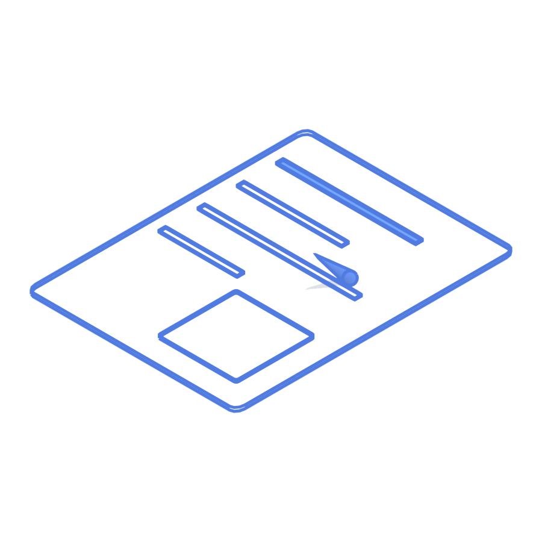
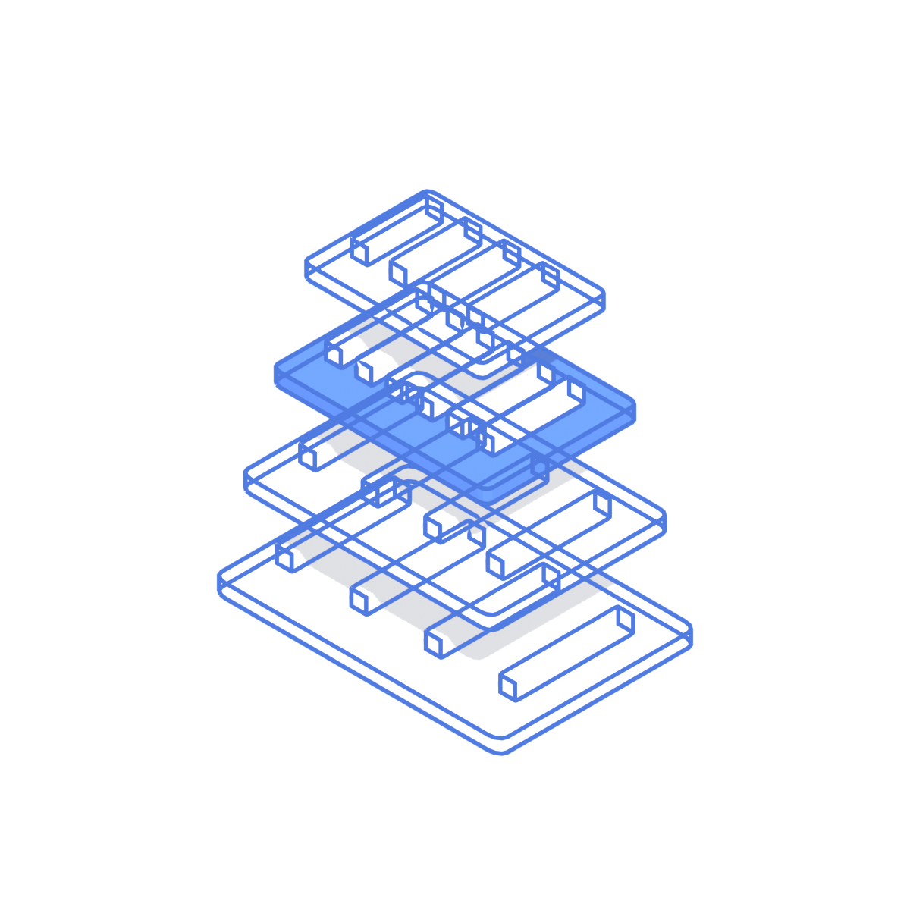
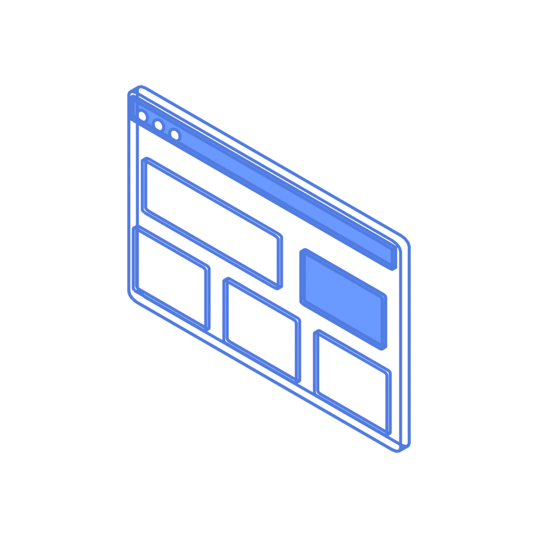
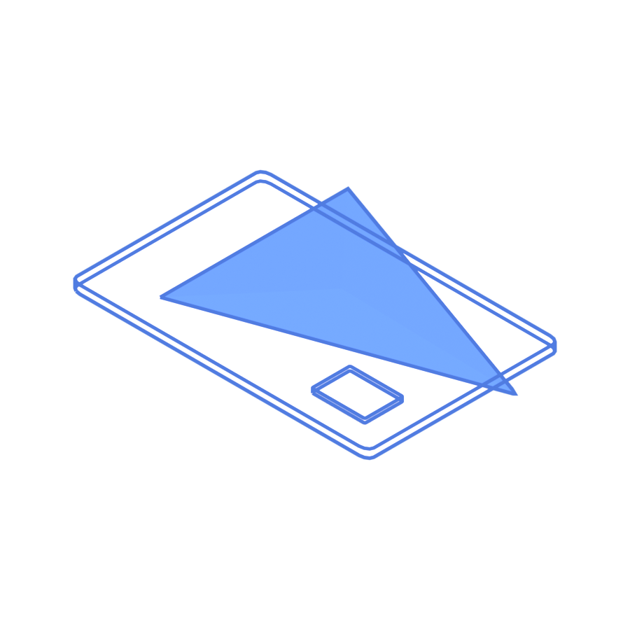
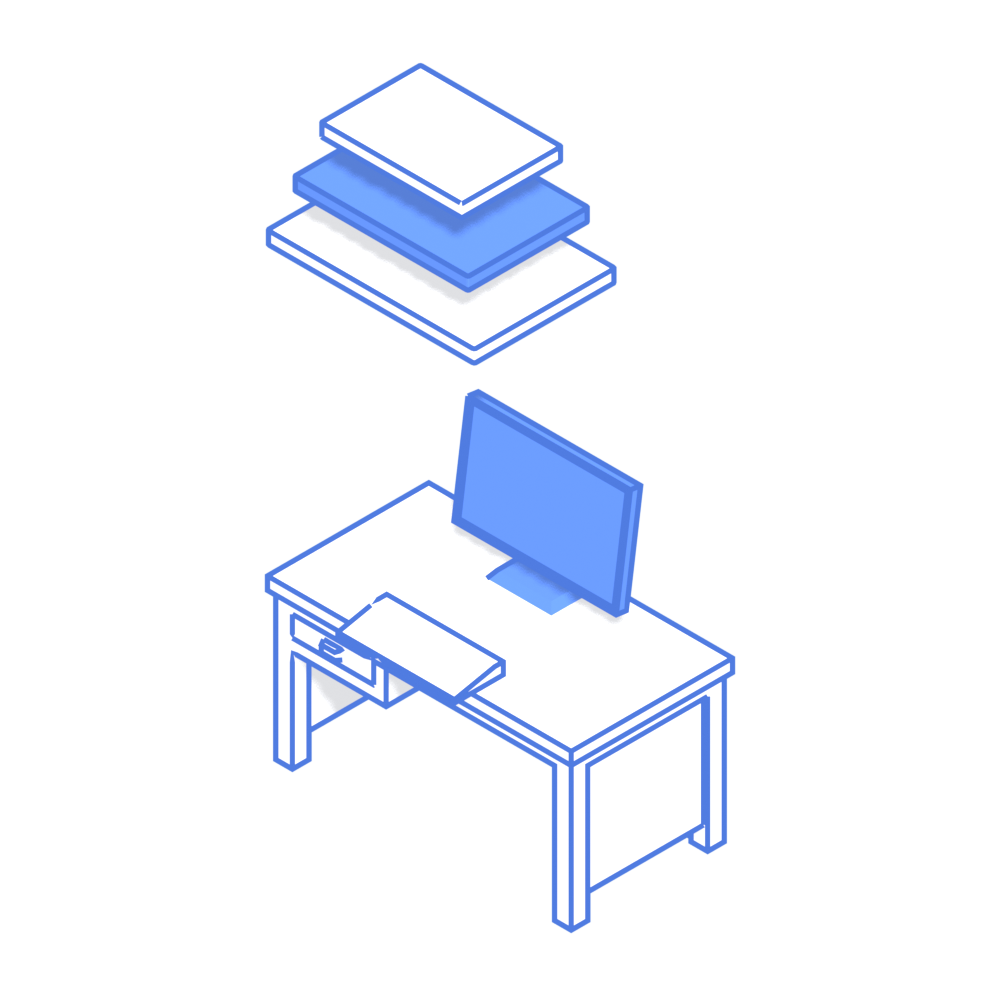
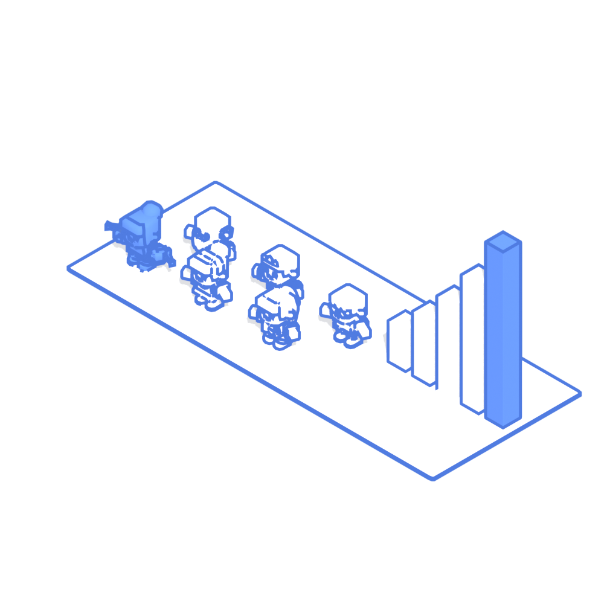

Sekcija na početnoj, po uzoru na NST "od fajla do isporuke". Pokazuje šta sve pokrivam na jednom projektu, sa primerima iz mog rada. Ispod nje: "Tražim posao, a primam i projekte. Ako imate jedno ili drugo, pišite mi."



Sve počne porukom: od klijenta, poslodavca ili moje ideje. Kod Makaza: saloni koji termine vode u svesci.
Arhitektura pre koda: moduli, baza, API. Za Makaze je to OpenAPI ugovor iz kog se generiše klijent.
Back-end u Laravelu, Go-u ili Django-u, front-end u Nuxt-u ili Next-u.
Brzina, prevodi, SEO i merenje od prvog dana. Medical Time: 5 jezika, 779 adresa u sitemap-u.
Google Ads, Meta i SEO. Na nalogu bolnice najbolje kampanje su do 54% ispod prosečne cene konverzije.

01 · 0-20%Koverta uleti, otvori se, papir izađe.
Papir postane list nacrta, olovka iscrta linije.

03 · 40-60%Nad stolom se slojevi sistema slažu jedan po jedan.
Slojevi se sklope u prozor pregledača, upali se.

05 · 80-100%Posetioci uđu, grafikon upita poraste.